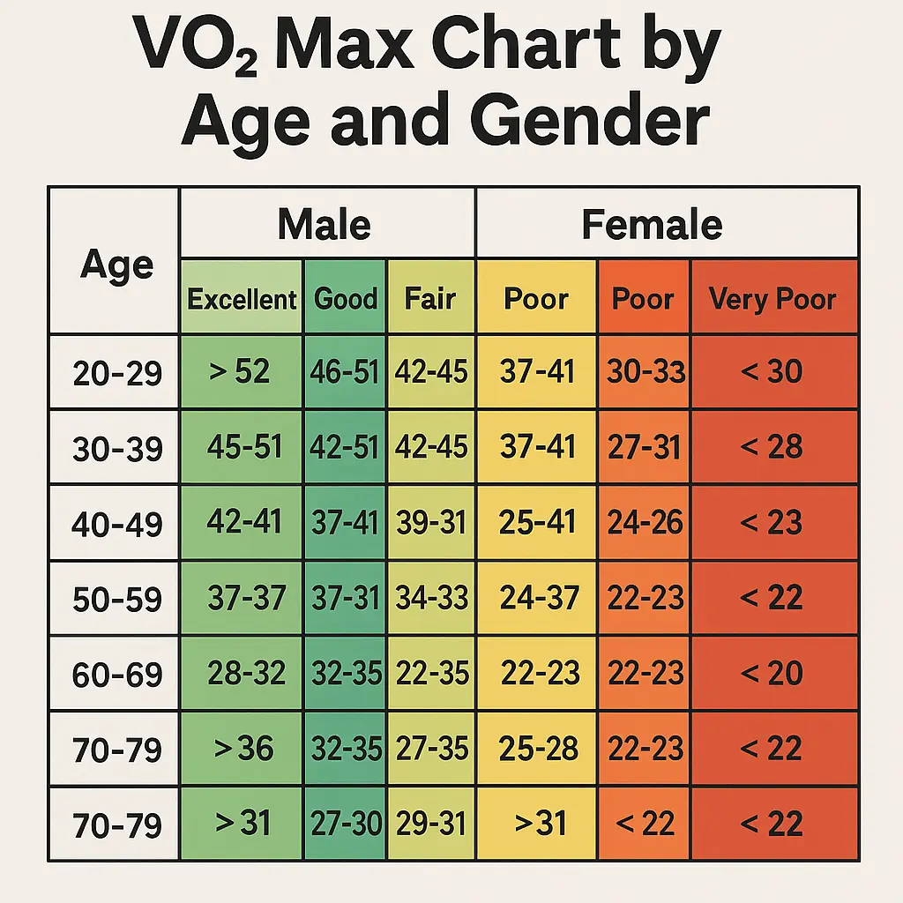

Quick Answer: VO2 Max is the maximum amount of oxygen your body can use during intense exercise. It's a key indicator of aerobic fitness. Higher VO2 Max means better endurance, heart efficiency, and fat oxidation.
What Is VO2 Max?
VO2 Max stands for Volume of Oxygen Maximum. It measures the maximum rate at which your body can consume oxygen during exercise. It's measured in milliliters of oxygen per kilogram of body weight per minute (ml/kg/min).
Elite endurance athletes often have a VO2 Max above 70 ml/kg/min. Average people fall between 30–50 ml/kg/min.
Why VO2 Max Matters
- Predicts your cardiovascular endurance
- Helps design effective training plans
- Linked to reduced disease risk
- Improves fat burning efficiency
Studies show higher VO2 Max is associated with lower mortality rates and better overall health outcomes.
How to Measure VO2 Max
You can test VO2 Max in labs with oxygen masks and treadmills or estimate it using fitness trackers and submaximal tests. Common methods include:
- Lab Test: Gold standard, but expensive
- Cooper Test: Run as far as possible in 12 minutes
- Rockport Walk Test: 1-mile brisk walk with time and heart rate
- Fitness Watches: Garmin, Apple Watch, Polar offer estimates
Factors That Affect VO2 Max
- Age: Decreases with age
- Gender: Men generally have higher scores
- Genetics: Plays a big role in your baseline
- Altitude: High altitude can improve performance over time
- Training: Endurance training can increase VO2 Max significantly
How to Improve Your VO2 Max
- HIIT (High-Intensity Interval Training): Alternate short bursts of intense effort with rest
- Zone 2 Cardio: Low-intensity long-duration aerobic training
- Progressive Overload: Gradually increase training volume
- Train Consistently: 4–5 sessions per week
- Lose Excess Fat: Improves oxygen efficiency per kg of body weight
- Altitude Training: Stimulates red blood cell production
What Is a Good VO2 Max Score?
Here's a general breakdown:
- Men 20–29: Average: 38–43, Excellent: 52+
- Women 20–29: Average: 34–39, Excellent: 47+
- Men 40–49: Average: 34–39
- Women 40–49: Average: 31–36
Common Mistakes to Avoid
- Only doing low-intensity cardio
- Not tracking progress
- Ignoring recovery
- Poor nutrition and hydration
- Overtraining without structure
FAQs
Can VO2 Max be increased at any age?
Yes. Although it declines with age, proper training can raise it even in older adults.
How long does it take to improve VO2 Max?
With consistent training, noticeable improvements can be seen within 4–6 weeks.
Is VO2 Max better than heart rate for measuring fitness?
VO2 Max gives a more complete picture of aerobic capacity and is less influenced by daily fluctuations.